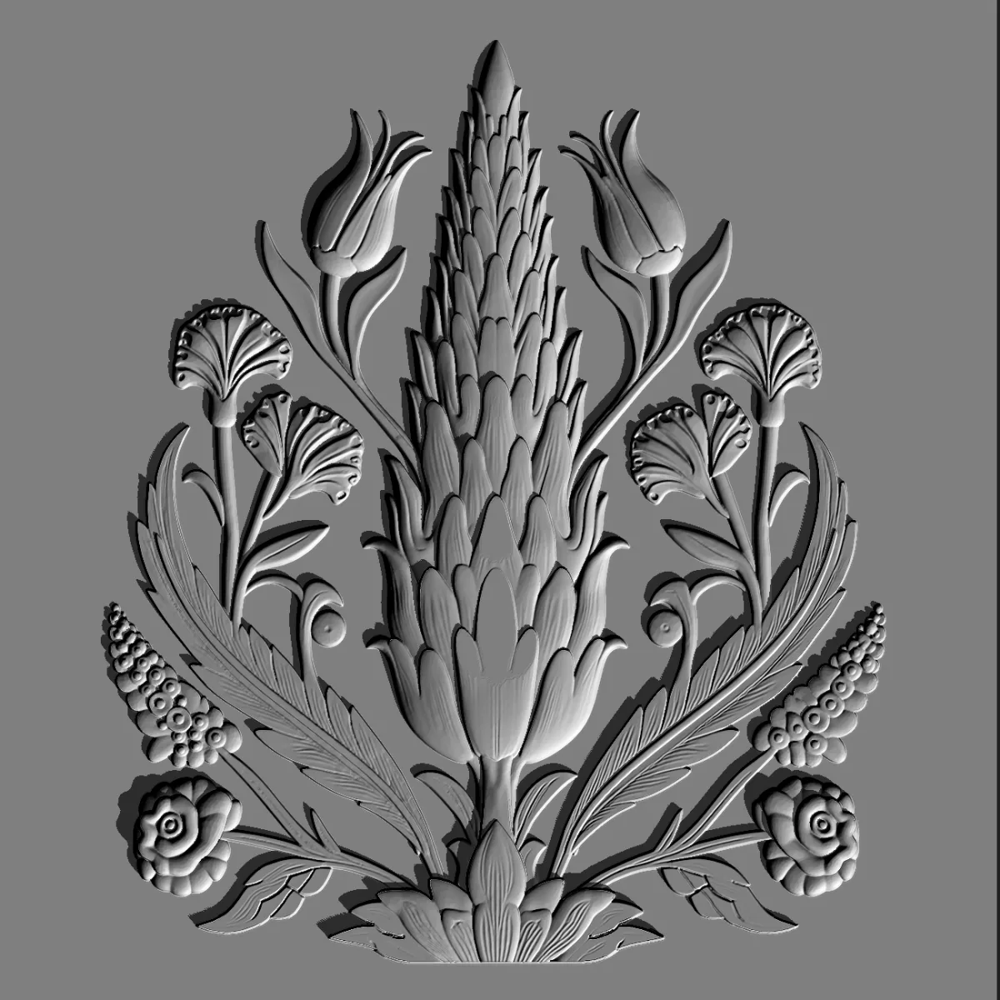
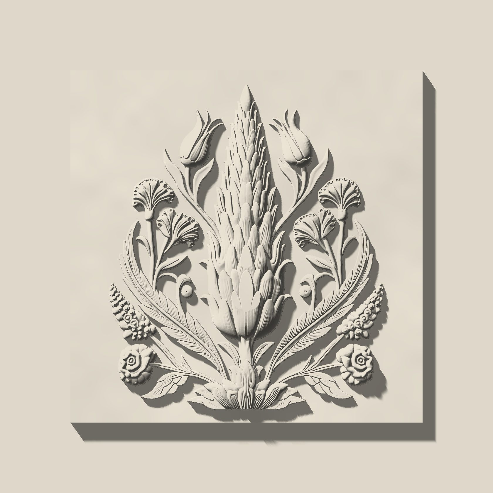

Your drawing,
cast faithfully.
A project drawing becomes a cast relief panel in our Sapanca workshop. Below, we follow Cantilena, one of our designs, through the same route a bespoke drawing takes.
-
01
The drawing
Every project starts with an image: a hand sketch, a dimensioned elevation or a reference. Here is Cantilena as a drawing: the cypress, tulip, carnation and rose of the Iznik tile tradition in one symmetric composition. The drawing, the depth map and the relief below are the same surface.
-
02
The depth map
We translate the drawing into a depth map, where every grey value is a height: black is the ground of the panel, white its highest point. Relief depth on Cantilena is 16 mm, ground to highest point. Changes are still digital, so they cost no tooling and no material.
-
03
Read in raking light
Before anything is cast, we read the surface digitally under raking light, low and from the side. This is where the relief’s shadow appears, and where shallow forms flatten out and deep ones fill solid with shadow. You approve this render; nothing is cast until you do.
-
04
The relief
The master is made from the approved surface, 3D-printed or CNC-machined depending on the geometry. What you see here is not the master: it is computed live from the same depth map. Move the cursor or scroll, and the light and its shadows move with it.
In the workshop
Mould, pour, demould and finish: every step happens in the same workshop.


From your drawing to the wall
- 01
Drawing
Send a sketch, a dimensioned drawing or a reference image.
- 02
Render approval
We render the relief in raking light and send it for your approval.
- 03
Quotation
We write a quotation for your project.
- 04
Contract and advance
Production begins on a signed contract and an advance payment.
- 05
Master approval
We make the master and put it to you for approval before anything is cast.
- 06
Mould and cast
We take the silicone mould from the approved master, then cast the panels in our Sapanca workshop and complete them with an artisan finish.
- 07
Installation
Installation is quoted separately, project by project.
Send your drawing.
Whatever you have is enough to start: a sketch, an elevation or a reference.